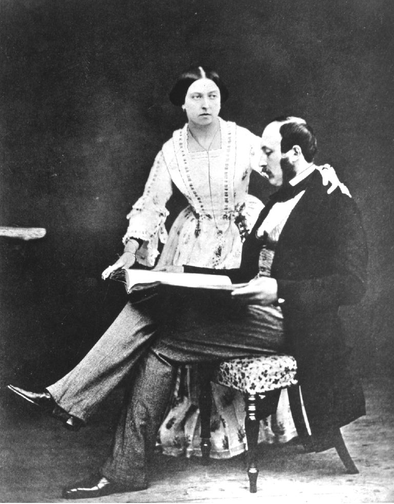
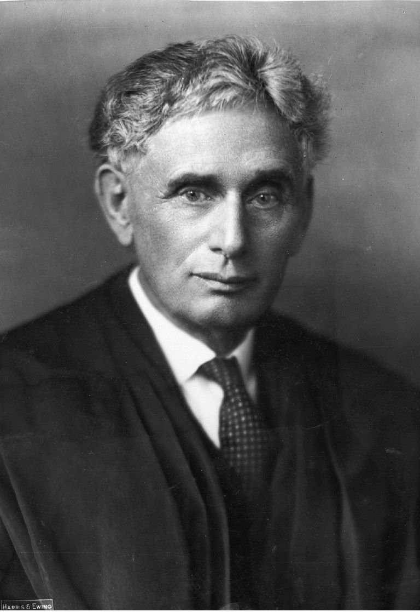
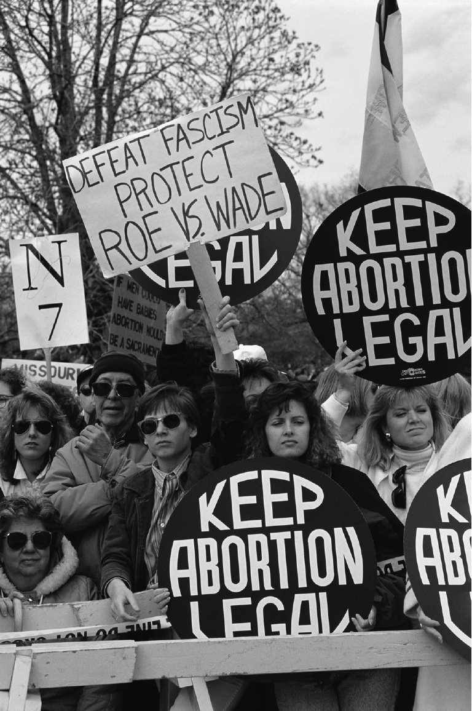
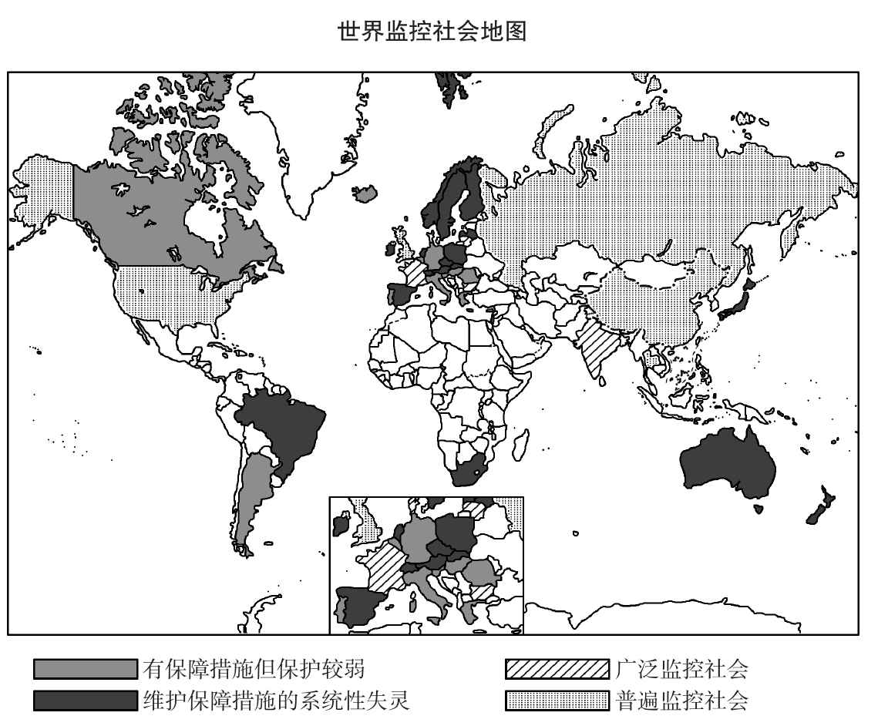
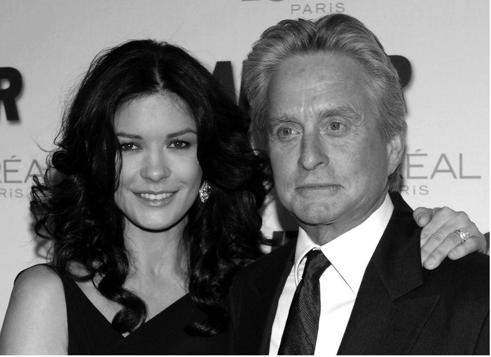

维多利亚女王和阿尔伯特亲王都是技艺高超的蚀刻师。1849年，这对皇室夫妇想要制作一些供他们私人使用的复制品，于是他们把一些蚀刻画的版面交给宫廷印刷商，其中之一就是斯特兰奇。有几版画不知怎么落到了第三方贾奇的手里，贾奇显然是通过斯特兰奇雇用的“卧底”得到的。后来，斯特兰奇从贾奇那里得到了这些画，并确信，在维多利亚和阿尔伯特的同意下，它们将被公开展示。于是，他们制作了一个画册并开始安排展览。当他得知不存在皇室的同意时，斯特兰奇退出了参展，但决定继续印刷画册。他的建议是将画册连同皇家艺术家的亲笔签名一起出售。
皇室夫妇对此并不开心。亲王申请禁令，以防止展览和预定展品画册的传播。不用说，禁令被批准了，法院的确厚着脸皮地承认，“本案的重要性完全来自原告的崇高地位……”。
虽然本案的判决主要依据的是蚀刻画版是王子的财产这一事实，但法院明确承认，这为法律提供了更广泛的基础，在此基础上，法律“保护致力于创作的作者希望不为人所周知的思想和感情的隐私与隐匿性”。

图9 皇室夫妇不开心
美国发轫
这一判决是1890年的传奇性文章的一个重要因素，而这一决定在1890年催生了法律对隐私权本身的承认。由塞缪尔·D.沃伦和路易斯·D.布兰代斯撰写的评论，发表在颇具影响力的《哈佛法律评论》上。几年前，伊士曼·柯达发明的一种价格低廉的便携式照相机改变了世界。个人可能在家里、工作或玩耍时被抓拍，隐私寿终正寝的时刻就要到了。
当时，波士顿律师、社会名流沃伦和1916年被任命为最高法院法官的布兰代斯，对新媒体的入侵，即所谓的“黄色新闻”感到愤怒，写了一篇被广泛认为是有史以来最具影响力的法律评论文章。人们常常认为，促使他们愤怒的原因是媒体对沃伦女儿的婚礼进行了窥探。但这似乎不大可能，因为在1890年，她才六岁！他们恼火的原因更有可能是波士顿上流社会的八卦杂志发表了一系列的文章，描述了沃伦奢华的宴会。

图10 后来成为美国最高法院杰出法官的路易斯·布兰代斯
无论如何，那篇著名的文章谴责了新闻界的厚颜无耻（也预示了柯达的新发明对隐私的威胁），并认为普通法默示并承认隐私权。他们援引英国法院关于违反保密、财产、版权和诽谤的裁决，认为这些案件不过是一般隐私权的实例和应用。他们声称，虽然形式不同，但普通法保护受到窥探记者之类的人侵犯的个人隐私。在这样做时，法律承认人的精神和智力需求的重要性。他们的声明很有名：
沃伦和布兰代斯认为，普通法已经从对自然人和有形财产的保护发展到对个人的“思想、情感和感觉”的保护。但是，由于晚近的发明和商业方法及新闻界对隐私的威胁，普通法需要进一步发展。一个人有权决定他的思想、情感和感觉在多大程度上向他人传播，这种权利已经受到法律保护，但这种法律仅适用于保护文学和艺术作品及书信的作者，他们可以禁止未经授权出版自己的作品和书信。虽然英国承认这一权利的相关案例是基于对财产的保护，但实际上它们也是对隐私的承认，是对“不可侵犯的人格”的承认。
不久，他们的论证方法就受到了考验。1902年，有原告起诉称，在未经她同意的情况下，其形象被用于为被告的商品做广告。她的形象被描绘在一袋袋面粉上，上面写着凄惨的双关语：“家庭面粉” [7] 。纽约上诉法院的多数法官没有接受沃伦和布兰代斯的论点，认为隐私权的论据“在我们的法理中还没有一个永恒的地位……如果不对既定的法律原则采取暴力，现在就不可能将隐私权纳入”。然而，少数法官很赞同J.格雷关于隐私的想法，宣称原告有权保护自己的形象免受被告为商业利益而利用，“任何其他的裁决原则……都是不符合公平原则的，理性思考起来也是令人震惊的”。
流言蜚语的邪恶
塞缪尔·D.沃伦和路易斯·D.布兰代斯，《隐私权》，1890年，《哈佛法律评论》第196卷第5期。
关于这个案件的法院裁决引起了普遍的不满。这导致纽约州颁布了一项法令，规定未经授权将个人的姓名或形象用于广告或贸易目的是非法的。但三年后，在一个涉及类似事实的案件中，佐治亚州最高法院采纳了J.格雷的理据。沃伦和布兰代斯的论点在发表十五年后占了上风。自那以后，美国大多数州都将“隐私权”纳入其法律。然而，尽管两位作者高度依赖英国法院的判决，但在英格兰或其他普通法法域没有出现类似的进展。
多年以来，美国普通法对隐私权的保护一直在稳步扩大。1960年，卓越的侵权法专家迪安·普罗瑟阐述了这样的观点，即法律现在所承认的并非一种侵权行为，而是由四种不同利益组成的复合体……它们以共同的名称联系在一起，但在其他方面没有什么共同之处。他将它们的性质阐述如下：
第二种侵权行为是公开披露有关原告的令人尴尬的私人事实。普罗瑟区分了这种侵权行为的三个要素：
第三，他指出了一种侵权行为，即在公众瞩目下把原告置于虚假的宣传中。这通常发生在这种情况下：一种意见或言论（诸如伪造的书籍或错误的观点）被公开认为来自原告，或者他的照片被用来说明他与之没有合理联系的书或文章。这种公开宣传必须也是“对一个通情达理的人的严重冒犯”。
最后，普罗瑟区分了被告为其自身利益盗用原告姓名或肖像的侵权行为。被告获得的好处不一定是经济上的好处，例如，如果原告在出生证上被错误地命名为父亲，就会产生这种好处。另一方面，几个州存在的法定侵权行为通常要求未经授权将原告的身份用于商业（通常是广告）目的。对这种侵权行为的承认确立了“公开权”的概念，根据这一概念，个人能够决定如何在商业上利用自己的名字或形象。在普罗瑟看来，侵犯隐私的四种形式只有在一种情况下是相互关联的，即每一种形式都构成了对“独处的权利”的干涉。
有人认为，这种对隐私权的四重区分是错误的，因为这种区分破坏了沃伦和布兰代斯的“不可侵犯的人格”的原理，忽视了隐私权的道德基础：这种道德基础作为人类尊严的一个方面而存在。尽管如此，这种分类在美国侵权法中占据了突出地位，正如一位法学家哈里·卡尔文所预测的，这种分类方法在很大程度上将概念僵化为四种类型：
这四种侵权行为的变迁，已经在大量的学术和通俗读物中得到了论述，这种发展也并非局限于美国。几乎每一个先进的法律体系都或多或少地寻求承认隐私权的某些方面，这些国家和地区包括奥地利、加拿大、中国大陆和中国台湾、丹麦、爱沙尼亚、法国、德国、荷兰、匈牙利、爱尔兰、印度、意大利、立陶宛、新西兰、挪威、菲律宾、俄罗斯、南非、韩国、西班牙、泰国和大多数拉丁美洲国家。
宪法赋予的权利
这四种侵权行为仍然是美国法律保护隐私的有效手段，它们或多或少也标志着宪法对隐私的保护范围。当然，沃伦和布兰代斯主要关注的是我们现在所称的媒体侵扰。然而几年后，1928年，在奥姆斯特德诉美国一案中，布兰代斯表达了强烈的异议。他宣称，《宪法》赋予人“独处的权利以对抗政府”，并补充说，“为了保护这一权利，政府对个人隐私的每一次无理侵犯，无论采取何种手段，都应视为违反了第四修正案”。最高法院在卡茨诉美国案中采纳了这一观点。自那以来，隐私权作为一种独处的权利，一再被最高法院援引。
1965年，最高法院对格里斯沃尔德诉康涅狄格州案的裁决，是最重要且最具争议的进展。它宣布康涅狄格州禁止使用避孕药具的法令违宪，因为该法令违反了婚姻隐私权，这是一项“比《人权法案》更古老”的权利。宪法并没有提到隐私权，然而，在一系列案件中，最高法院通过《人权法案》（尤其是第一、第三、第四、第五和第九修正案），承认“结社隐私”、“政治隐私”和“律师隐私”等隐私权，还规定了对窃听和非法搜查进行防范的限度。
到目前为止，最高法院做出的最具争议性的“隐私”裁决是1973年罗伊诉韦德案。它凭借多数票认为得克萨斯州的堕胎法因为侵犯了隐私权，所以是违宪的。根据该法律，堕胎是犯罪行为，除非是为了挽救孕妇的生命。法院认为，各州可以禁止堕胎，以保护胎儿的生命，但只能禁止在妊娠的最后三个月堕胎。这一被称为“无疑是美国最高法院有史以来最著名的案件”的判决受到女权主义者的欢迎，但同时也遭到许多基督徒的强烈谴责。这个判决使得美国妇女获得了实现合法堕胎权的一线希望。似乎没有任何中间立场。法理学家罗纳德·德沃金直截了当地描述了这场冲突的激烈程度：
最高法院做出的另一项引起轩然大波的“隐私”判决，是1986年鲍尔斯诉哈德威克案，在该案中，法院以勉强的多数票认定，正当程序条款中的隐私保护并没有扩展到成年人之间私下自愿的同性恋行为：“无法证明家庭、婚姻或生育与同性恋行为之间存在任何联系。”

图11 美国最高法院1973年对罗伊诉韦德案的裁决引发了一场持续至今的争论
这一判决在劳伦斯诉得克萨斯州案中被明确否定。在该案中，最高法院以六比三的票数裁定，该判决对自由利益的解释过于狭窄。多数派认为，第十四条修正案所规定的实质性正当程序包括进行私下自愿的性行为的自由。它的作用是废止全美国旨在将成年同性私下自愿的鸡奸行为定为犯罪的所有立法。
美国的经验既有影响力，又有启发意义。其他普通法法域继续努力解决隐私的定义和范围、协调隐私权与其他权利，特别是隐私权与言论自由之间的关系等棘手问题。可以公平地说，一般而言，英美法系往往是以利益为基础的，而大陆法系往往是以权利为基础的。换言之，例如，英国法律对保护隐私权采取了务实的逐案处理的路径，而法国法律则将隐私权视为一项基本人权。然而，由于受《欧洲人权公约》和欧盟其他宣言、指令的影响，这种差异已经缩小。英国1998年通过的《人权法案》最明显地表明了这种强烈的风向，下文将清楚地说明这一点。

图12 隐私在全球范围内被赋予不同程度的保护
普通法的磨难
不仅英格兰和威尔士的法律仍然在努力解决隐私权的困境。澳大利亚、新西兰、爱尔兰、加拿大、中国香港和其他普通法法域，也都深陷优柔寡断和犹豫不决的泥潭。
尽管英国有几个委员会并试图立法，英国的法律仍然是不确定和模棱两可的。1972年，青年委员会拒绝了法律所规定的一般隐私权的理念。其结论是，一般隐私权的理念会让法院背负“具有社会和政治性质的争议性问题”。法官很可能会在平衡隐私和言论自由等相互冲突的利益之间遇到问题。委员会建议设立一项新的罪行和侵权行为，即非法监控；一项新的侵权行为，即披露或以其他方式非法获得信息；以及审议关于违反保密义务的法律（该法保护一方委托给另一方的机密信息），以此作为保护隐私权的一种可能的手段。其他普通法法域也曾提交过类似的报告。
近年来，一连串的名人诉讼为法院提供了一个机会来审查，在缺乏明确的普通法隐私保护的情况下，法院是否可以为违反保密义务的补救提供一种权宜之计。这些问题最好在第四章中探讨。它们表明了隐私权是如何无精打采地走向最高法院而诞生的。其中一个案例涉及电影明星迈克尔·道格拉斯和凯瑟琳·泽塔-琼斯的婚礼照片被偷拍并公开，这也会在第四章讨论。霍夫曼勋爵已在上议院宣布：
该法案（将《欧洲人权公约》第8条纳入英国法律）的影响无论怎样强调都不为过。它规定保护尊重家庭生活、住宅和通信隐私的权利。至少在一名高级法官看来，这项措施给予了“英国法律承认隐私权的最终推动力”。尽管他的看法不一定得到司法机构所有成员的认同，但最近一些案件中所显示的对隐私权的分析表明，《欧洲人权公约》第8条的作用至少是为本条中权利的横向适用提供可能性。的确，在最近的一些判决中可以发现一种意愿，即允许第8条阻止全面的隐私侵权行为的产生，这并非毫无理由。你几乎可以听到剑回鞘中的咣当声。
和英国一样，澳大利亚各州和联邦一级的法律改革委员会都在审议法律保护的必要性。法院也没有闲下来，在2001年一项意义重大的裁决中，澳大利亚高等法院的多数法官小心翼翼地倾向于承认隐私侵权行为。在澳大利亚广播公司诉利纳野味肉类有限公司一案中，法院承认澳大利亚法律的不足，表示它支持普通法法域内对侵犯隐私提起普通法诉讼的司法发展。在详细说明什么会构成对隐私的无理侵犯时，法院指出：

图13 尽管道格拉斯夫妇试图秘密举办婚礼，但最终还是被偷拍了照片，从而在英国引起了旷日持久而意义重大的诉讼
这项裁决虽然在核心问题上没有定论，但的确表明，如果高等法院在面对一个更值得帮助的原告时（本案是澳大利亚广播公司希望揭露一家屠宰场的残酷做法），则可能会认识到隐私侵权行为并非完全不可想象。
2005年，新西兰上诉法院在承认普通法隐私侵权方面迈出了重要一步。在霍斯金诉伦廷一案中，被告拍下了原告十八个月大的双胞胎女儿的照片，当时原告在街上用婴儿车推着她们，婴儿的父亲是一个著名的电视人物。原告夫妇申请禁制令阻止照片公之于众。审判法院认为，新西兰法律不承认基于公开披露在公共场所拍摄的照片而导致隐私诉讼的理由。然而，虽然上诉法院驳回了原告的上诉，但它（以三比二的票数）裁定，对“因公开私人和个人信息而侵犯隐私权”的行为给予补救办法。这种观点主要是基于它对英国法院对违反保密义务的解决方法的分析所做的阐明，以及符合新西兰根据《公民权利和政治权利国际公约》和《联合国儿童权利公约》规定所应承担的义务这一事实。法院还认为，他们的判决有助于调和相互冲突的价值，并使新西兰能够借鉴美国的广泛经验。
P.高尔特和J.布兰查德在其判决中详述了诉求成功的两点基本要求。第一，原告必须对隐私有一种合理的期望；第二，必须公开私人事实，而这些事实的公开会被认为是对一个客观的、通情达理的人的高度冒犯。
新西兰1993年的《隐私法案》规定，任何人都可以向隐私事务专员提出申诉，宣称任何行动是或似乎是“对个人隐私的干涉”。如果隐私事务专员认为申诉有实质内容，他可将申诉转交给根据1993年《人权法案》任命的诉讼专员，诉讼专员可转而向申诉审查法庭提出诉讼。法庭可发布命令，禁止指控的行动再次发生或要求纠正这种干涉。法院有权裁定损害赔偿。
虽然爱尔兰没有明确承认普通法中的一般隐私权，但法院根据《宪法》第40.3.1条制定了隐私权的宪法权利，根据这一条款，国家保证尊重、捍卫和维护公民的个人权利。例如，1974年，最高法院的大多数法官认为隐私权包括在公民的个人权利之中。之后的诸多判决表明，该条款延伸到通过拦截通信和监视侵犯隐私权的某些行为。
其他路径
大陆法系对隐私权的态度是以“人格权”的概念为基础的。在德国，这项权利受《基本法》的保障。该法第1条规定，所有国家机构都有义务尊重和保护“人的尊严”；第2条第1款规定，“人人有权自由发展其人格，只要他不侵犯他人的权利或违反宪法秩序和道德准则”。这两条结合起来，就确立了一般性的个人人格权，而尊重个人私生活领域的权利正是这一人格权利的体现。
此外，法院还将隐私权作为《民法典》规定的人格权的一部分加以保护。它们还利用侵权行为法，对损害人的尊严的行为提供解决办法。例如，未经许可不得擅自公布个人私生活的私密细节，未经患者同意不得发布医疗报告，未经本人知情和同意不得对谈话进行录音，不得打开私人信函——不论信函是否已被实际阅读，未经同意不允许拍照，公正描述个人生活，个人信息不得被新闻界滥用。
德国法院承认人格的三个领域：“亲密”、“私人”和“个人”领域。“亲密领域”包括一个人的思想和情感及其表达、医疗信息和性行为。由于这类信息具有特别的私人性质，因此享有绝对的保护。“私人领域”包括既不亲密也不保密（如关于家庭和家庭生活的事实）的信息，但这些信息仍然是私人的，因此受到适当的保护，但为了公众利益而披露可能是合理的。“个人领域”涉及个人的公共、经济和职业生活、社会和职业关系，它受到最低程度的保护。
在法国，隐私权受到积极的保护。虽然《法国宪法》没有明确提及隐私权，但宪法委员会于1995年将第66条中的“个人自由”的概念扩展到隐私权。因此，隐私权被提升为一种宪法权利。此外，《法国民法典》第9条规定，“人人享有尊重自己私生活的权利……”。法院对此的解释是，这包括一个人的身份（姓名、出生日期、宗教信仰、住址等）和有关一个人的健康、婚姻状况、家庭、性关系、性取向及其通常的生活方式等信息。通过拍照或录音故意侵犯私人场所也属于刑事犯罪，可判决违法者承担损害赔偿。
《意大利宪法》保护作为个人人格组成部分的隐私权。因此，侵犯隐私权可能引起根据《民法典》提出的索赔主张，该法规定，故意或过失地对他人造成不合理损害的行为人，有责任对受害人进行赔偿。《民法典》还宣布，如果公开一个人的肖像会导致其尊严或名誉受损，这种行为可受到限制。
《荷兰宪法》第10条保障隐私权，但这是一项需加以限定的权利。尽管最高法院认为言论自由权不能成为侵犯隐私权的借口，但它将在隐私诉讼中考虑所有情况，记者可以论证有关出版物是合理的。《民法典》第1401条规定了对他人造成不法损害的一般责任，该条款被解释为包括无正当理由公布有害的私人信息所造成的损害。刑法规定，侵入他人住宅、窃听私人谈话、擅自拍摄个人私人财产的照片及公布通过这种方式获得的照片，均应受到处罚。
虽然《加拿大宪法》及其《权利和自由宪章》都没有明确提到隐私权，但法院通过将不受无理搜查或没收的安全权（《权利和自由宪章》第8条）解释为包含个人享有对隐私权的合理期望，填补了这一空白。美国没有普通法规定保护隐私权，但下级法院表现出愿意扩大现有的诉因，如侵害或妨害，以保护受害者的隐私。通过规定侵犯隐私权的法定侵权行为，这一普通法缺陷在加拿大的一些省份已得到解决。在不列颠哥伦比亚省、马尼托巴省、纽芬兰省和萨斯喀彻温省，“侵犯隐私权”的侵权行为是可诉的，受害人无须证明损害的存在。但对侵权行为的确切表述则在各省有所不同。
魁北克作为一个大陆法系法域，通过对原《民法典》中民事责任一般规定的解释，发展了其法律程序的解决办法。不过，目前对隐私权的保护已明确纳入新的《民法典》。新的《民法典》规定，人人有权获得对自己名誉和隐私的尊重，任何人不得侵犯他人的隐私，除非得到该人或其继承人的同意，或经法律授权。规定的侵犯隐私行为的形式涵盖了相当广泛的行为。此外，魁北克《人权和自由宪章》第5条宣布，人人都有获得其私生活受尊重的权利，这项规定可在公民之间直接执行。1994年的《统一隐私法》澄清并补充了现有的省级法规。
国际层面
一种相当宽泛意义上的隐私权是一项公认的人权，在大多数国际文件中都得到承认。举例来说，《联合国人权宣言》第12条和《公民权利和政治权利国际公约》第17条均规定：
《欧洲人权公约》第8条规定：
位于斯特拉斯堡的欧洲人权法院，一直忙于对个人就据称违反第8条规定的行为寻求补救的申诉进行裁判。他们的申诉暴露了欧洲法域内若干国家国内法的不足。例如，在加斯金诉英国案中，法院认为，尊重私人和家庭生活的权利使个人有义务向公共当局提供其本人的个人信息。在利安德诉瑞典一案中，法院裁定，如果信息与国家安全有关，例如，为了审查个人的敏感职位，可以合法地拒绝向申请人提供这种信息，但条件是有一个令人满意的程序，可以对不提供信息的决定进行复查。下文将讨论法院在电话监听方面的两项主要裁决。
侵犯
今天的间谍不再孤立无援地依靠自己的眼睛和耳朵了。正如我们在第一章中看到的，一系列的电子装置使他的任务相对简单。面对技术进步，传统的实物或法律保护手段不太可能特别有效，前者是因为有了雷达和激光束，墙壁或窗户的阻挡毫无意义；后者是因为在不侵犯个人财产的情况下，非法侵入方面的法律将不会帮助被电子监控所困扰的受害者。受保护的利益是原告的财产，而不是其隐私。
对私人场所的实际侵入引起了类似于拦截私人谈话和信件（无论是电子的方式还是其他方式）所产生的问题。没有有效搜查令（通常由法院签发），任何文明社会都不能允许未经许可擅自进入并搜查一个人的住宅。预防、侦查和起诉犯罪行为常常需要警察和其他执法当局对私人住宅进行搜查。这是一个超出隐私保护范围的更深层次的政策问题。不过，尤其是在现代工业化社会，电子监视、截取通信和电话窃听显然需要系统和相当周密的立法机制来控制，特别是在法律允许使用这些装置的情况下，以及在追捕罪犯和执行刑事司法过程中对这些装置的合法运用。
许多民主国家的法律对司法当局秘密监视的行为做了调整。通常，法院的命令规定了对行使这种权力的限制，包括时间限制，因为这种权力尤其有害，它不仅监听被监听对象所说的话，而且还涉及他或她说话的对象。大多数人很可能是完全无辜的对话者。
监控和恐怖主义
在所谓的“反恐战争”中，一个强有力的武器就是窃听器。可以预见，自2001年9月11日的恐怖袭击以来，窃听器的使用有所加强。在这一天之后的六个星期内，美国国会颁布了《美国爱国者法案》。这只是为授权一些执法官员对范围广泛的活动（包括电话、电子邮件和互联网通信）进行监视而采取的若干措施之一。在这之前的一系列法规，如《窃听法》、《电子通信隐私法》和《外国情报监控法》的规定已得到实质性修订，从而大大削弱了它们的隐私保护措施。
隐私权倡导者和公民自由论者谴责了该立法的许多内容。他们关注的一个问题是，该法通过将私人互联网通信置于最低限度的审查标准之下，减少了对电子监控的司法监督。该法还允许执法当局获得事实上的“空白逮捕令”；授权“漫无目的”的情报监听令，这种监听令不需要具体说明搜查地点，也不要求只监听目标人的谈话。
该法另一个令人不安的特征是，它赋予联邦调查局（FBI）权力，使之能够利用其情报机构来逃避对宪法第四修正案中规定的“合理根据”的司法审查，因为该修正案要求搜查令要指明具体搜查的地点。它防止滥用权力，例如根据搜查他人住宅的授权对无辜者的住宅进行任意搜查。换言之，在电子监控的情况下，第四修正案的具体要求强制执法官员必须申请法院命令，指明他们希望窃听的电话。
最高法院在1967年卡茨诉美国一案的著名裁决中认为，在公用电话亭外放置监听装置构成非法搜查。政府辩称，由于窃听器实际上不在电话亭内，原告的隐私没有受到侵犯。法院驳回这一观点，并宣称“第四修正案保护的是人民，而不是地方”。尽管法院后来有所退让，但它做出的裁断，即保护应取决于个人在这种情况下是否有一种“合理的隐私权期望”，这仍然是支持应将类似保护适用于互联网通信的主张的关键。然而，就目前而言，《爱国者法案》及其最新的版本，以及相关的措施，都对诸如此类的问题置之不理。
在颁布该法之前，恐怖主义和间谍案件的调查人员在嫌疑人每次更换电话或电脑时，都必须回到法庭，并获得新的搜查令才可以继续调查。
该法案允许秘密法庭发出“流动监听”令，在无法确定特定电话或嫌疑人身份的情况下拦截嫌疑人的电话和互联网通话。换言之，当流动监听令的目标进入他人住所时，执法人员可以窃听该房主的电话。
这些对隐私的立法干预真的有必要吗？根据美国公民自由联盟的说法：
笔式记录器和跟踪装置以电子方式审查电话或互联网通信。所以，一个笔式记录器会监控从一条电话线拨打的所有号码，或者所有的互联网通信都会被记录下来。《爱国者法案》授权联邦法官或地区的治安法官签发笔式记录器或跟踪令，但该命令没有指明可适用的互联网服务供应商（ISP）的名称。实际上，它可适用于美国任何地方的ISP。法官只需签发命令，执法人员填写可以送达命令的地点，从而进一步削弱了司法职能。
核准方式
早在目前的一系列反恐措施出台之前，美国就已在联邦和州一级颁布了若干法规，规定了政府拦截通信之前必须符合的标准。在根据1986年《电子通信隐私法》（ECPA）签发搜查令之前，执法人员必须说明所调查的罪行的性质、拦截点、拟拦截的对话类型，以及可能的目标人的姓名。他需要证明合理根据，且常规的调查手段无效。法院根据该法发出命令授权进行长达三十天的监视（可以延长三十天）。必须每七至十天向法院提交一份报告。
未经法院批准，窃听或使用机器获取他人通信是一种联邦犯罪，除非其中一方事先同意。使用或披露通过非法窃听或电子窃听获得的任何信息也是一种联邦罪行。此外，立法还对防止拦截电子邮件和秘密使用电话呼叫监控的做法提供保护。这些安排包括一种程序性机制，使执法人员能够在符合宪法第四修正案规定的条件下有限地查阅私人通信和通信记录，第四修正案保障不受无理搜查和扣押的权利。并规定除非有合理根据，否则不得发出搜查令。
一种解决方案？
没有完美的制度。但是，人们可以期待民主社会至少以确保其公民合法、合理的期望得到尊重的方式，来规范这种高度侵入性的监视形式。在决定是否批准进行秘密监视的搜查令申请时，法院应确定提议的侵入具有合法目的，应确保调查手段与所指控罪行的紧迫性和严重性相称，同时兼顾监视的需要与监视活动的目标人物和可能受其影响的对象与其他人的侵扰性。必须有合理的理由怀疑目标对象参与了严重犯罪。还应确信，有可能获得与监控目的有关的信息，而且此类信息不能以侵入性较小的其他手段合理获得。
在做出裁决时，人们有权假定，司法官员将考虑到严重犯罪的紧迫性和严重性或对公共安全的威胁、侵入发生的地点、所采用的侵入方法，以及使用的任何装置的性质。
法院应在特定案件情况下考虑“合理的隐私权期望”。在窃听方面，有时会听到这样的建议：如果窃听者是个人，电话用户对隐私的合理期望可被证明是正确的，但如果窃听者是根据合法授权行事的警察，则不会得到确认。虽说这是基于对风险的接受，但很难看出如何可以合法地做出这种区分。如果我有权假设我的私人谈话不会被某个个人听到，那么当窃听者是警察的时候，为什么这个假设就不那么有理据了呢？
另一个反复出现的困难是在“未经同意的监视”而非“参与者监测”的情况下所适用的标准。前者发生在非对话当事方拦截了私人的谈话，而该人没有得到任何当事方的同意。另一方面，“参与者监测”包括谈话一方使用监听设备传递会话的情况给非当事人的第三方，或者谈话的一方未经另一方同意而将谈话录下来。人们经常争辩说，虽然未经同意的监视应当受到法律控制，但参与者监视——特别是在执法中使用——是正当的。但这忽略了对保护谈话内容的关注，也许更重要的是，忽略了谈话的方式这有其特殊利益。此外，尽管参与者监测在侦查犯罪方面是一种有用的帮助，而且可以说，相对于未经同意的监视而言，参与者检测对隐私的威胁较小，但“秘密录音的谈话方能以完全有利于其立场的方式来陈述事情，因为他控制着谈话的情境，他知道自己在录音”。
欧洲
欧洲人权法院在隐私领域特别积极。简要地比较其两项重要裁决，是有启发性的：一项涉及德国，另一项涉及英国。克拉斯诉德意志联邦共和国案中的电话窃听符合德国法规。然而，在马龙诉英国一案中，没有一个全面的立法框架。虽然两者都涉及模拟电话，但所表达的原则足以适用于数字电话通信系统和拦截书面通信，也许也适用于其他形式的监控。
德国法律对拦截规定了严格的限制条件，包括要求书面申请、事实上有理由怀疑一个人计划犯罪、正在犯罪或已经犯下某些罪行或颠覆行为，而且监视只涉及特定嫌疑人或其拟联系人，因此不允许进行探索性或常规性监视。法律还规定，必须证明其他调查方法无效或困难得多。拦截行动由一名司法官员监督，他只能透露与调查有关的信息，其余信息他必须销毁。截获的信息本身必须在不再需要时销毁，并且不得用于任何其他目的。
法律规定，这些要求一旦结束，必须立即停止拦截，而且在不损害拦截目的的情况下，必须尽可能快的通知被拦截者。他或她随后可在行政法院质疑拦截的合法性，并且，如果损害得到证实，还可在民事法院要求损害赔偿。
此外，《德国基本法》保护邮件、信函和电信的保密性。因此，根据《欧洲人权公约》第8条第2款规定，“为了国家安全的利益……或为了防止混乱或犯罪”，“符合法律”和民主社会所必需的，法院必须裁定干涉是否有正当理由。虽然法院承认有必要通过立法来保护这些利益，但它认为，问题不在于是否需要这些条款，而在于这些条款是否包含充分的保障措施以防止滥用。
申诉人争辩说，立法违反了《欧洲人权公约》第8条，因为它没有要求在监视结束后必须“总是”通知被拦截对象。法院认为，这与第8条并无内在的矛盾，但条件是，一旦可以发出通知，就在监测措施终止后，在不危及这些措施的目的的情况下，立即通知监控对象。
在马隆诉英国一案中，原告在审理一系列和处理被盗财产有关的指控时，得知他的电话交谈被窃听，于是向警察发出了一项令状。他认为，第一，电话窃听是对其隐私、财产和私密性权利的非法侵犯；第二，电话窃听违反了《欧洲人权公约》第8条；第三，由于法律没有授予这种权力，英国政府无权拦截电话。他向欧洲人权法院申诉，并在该法院取得胜诉，这种结果并不令人惊讶。法院一致认定，电话窃听确实违反了《欧洲人权公约》。这种情况导致的结果是，英国政府承认有必要制定一项法规，于是颁布了《1985年通信截收法》。该法案建立了一个相当全面的框架，其核心条款是授权国务卿在其认为为了国家安全、防止或侦查严重犯罪或保障经济福祉所必需的情况下，可签发搜查令。
虽然窃听显然有助于逮捕罪犯、防止犯罪和恐怖主义，但是，想采用这种不分青红皂白的调查方法的人有责任表明这样做的迫切性，并证明这种调查方法可能是有效的，而且没有其他可接受的替代办法。如果无法证明这一点，就几乎不可能证明这种做法是正当的，“不是因为我们想妨碍执法，而是因为我们的某些价值观念比高效的警务工作更重要”。
审慎处理这个问题，可确保在监控材料是以极不合理的方式取得并严重损害公众对司法行政部门的信心的情况下，所获取的信息不应作为证据在法庭上被接纳。